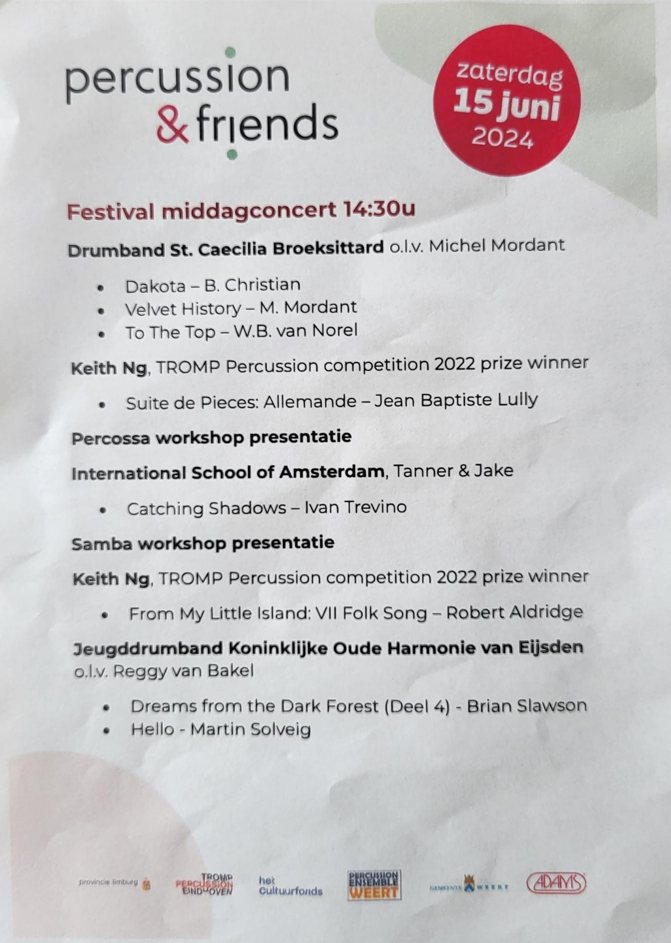
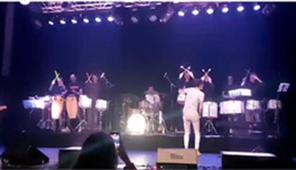
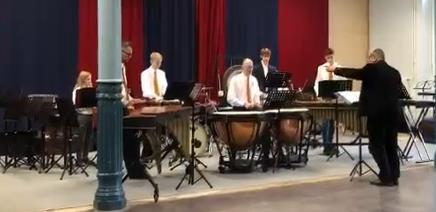

Netherlands · 2021 – 2024
Fanfare St. Caecilia Broeksittard
Percussion students at the music school Cultuurperron, Thorn, from 26 October 2021, and the percussion ensemble of Fanfare St. Caecilia Broeksittard from 26 January 2022.
- 2024
15 June · Thorn
Concert at Adams Music Centre, Thorn, in cooperation with the Percussion Ensemble JMS Eschweiler: Dakota, Velvet History (extended version) and To the Top.
22 April · Volt, Sittard
Powerized concert — rock band with percussion ensemble: Imagine Dragons, Believer; Powerized, Fire Away; Bastille, Pompeii; and St. Caecilia on Parade (M. Mordant).

Percussion & Friends festival, Saturday 15 June 2024 
Concert at Adams, Thorn 
Concert at Adams, Thorn 
Powerized concert, Volt Sittard - 2023
17 December · Broeksittard
Concert with a newly dedicated piece: St. Caecilia on Parade (M. Mordant).

- 2022
21 October · Forum Sittard — first concert
Percussion ensemble: Six Little Indians (V. Firth); Examinandus (S. Egberts, arr. M. Mordant); Velvet History (M. Mordant).

Examinandus (S. Egberts, arr. Michel Mordant) in concert. - 2021
Percussion students, music school Myouthic.